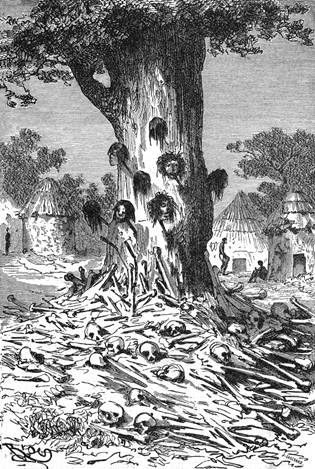

Nebeská láhev. – Fíkové palmy. – „Mammouth trees“. – Válečný strom. – Okřídlené spřežení. – Bitva dvou kmenů. – Řež. – Božské zakročení.
Vítr byl čím dále tím prudší a nepravidelnější. Viktorie v pravém smyslu slova plavolila vzduchem. Jsouc unášena tu na sever, tu na jih, nemohla uhoditi na stálý povan.
„Ujíždíme velmi rychle, a přece nehrubě postupujeme“ řekl Kennedy, všimnuv si častých odchylek magnetické střelky.
„Viktorie uhání s rychlostí při nejmenším osmdesáti kilometrů za hodinu“ odvětil Samuel Fergusson. „Vykloňte se a vizte, jakým kvapem míjí nám krajina pod nohami. Hle! zdá se, jako by se ten les řítil nám v ústrety!“
„Z lesa už je mýtina“ zvolal lovec.
„A z mýtiny vesnice,“ dodal Joe za několik okamžiků. „Ti černoši tváří se dost užasle!“
„To není nijak s podivenou,“ odtušil doktor. „Francouzští venkované stříleli na balony, když se jim poprvé objevily, majíce je za vzdušné nestvůry, pročež je zajisté sudanskému černochovi dovoleno vyvalovat oči.“
„Na mou věru!“ pravil Joe, když Viktorie míjela ves ve výši sta stop nad zemí, „shodím jim prázdnou láhev s vaším dovolením, pane; dopadne-li celá a neporušena, budou se jí klanět; pakli se rozbije, nadělají si ze střepů talismanů!“
A to praviv vyhodil láhev, která se rozdrtila na tisíceré kousky zatím co domorodci prchali s hrozným křikem do svých okrouhlých chat.
O něco dále zvolal Kennedy:
„Podívejte se pak na ten zvláštní strom! nahoře jest jiného druhu a dole také jiného.“
„Je to pouze kmen smokvoně,“ odpověděl doktor, „na němž usadilo se trochu plodné prsti. Vítr zanesl tam kdysi símě palmové, a palma vyrazila na smokvoni jako v širém poli.“
„Znamenitá moda, kterou zavedu v Anglii,“ vece Joe; „v londýnských parcích bude to pěkně vypadat a kromě toho rozmnoží se tím způsobem ovocné stromy; vypěstují se záhady ve výšce, což schválí dojista všichni drobní majitelé pozemků.“
V tom nastala potřeba vystoupiti s Viktorií, aby se přenesla přes les stromů nad tři sta stop vysokých, jakýchsi staletých banánů.
„Jak nádherné stromy to!“ zvolal Kennedy; „neznám nic tak krásného jako podívanou na tyto lesy. Pohleď pak, Samuele.“
„Výška těchto banánů je v pravdě hodna podivu, milý Dicku, a přece by nebyla ničím zvláštním v lesích Nového světa.“
„Jakže? což jsou stromy ještě vyšší?“
„Ovšem, mezi těmi, jimž říkáme ‚mammouth trees‘[41]. Tak byl v Kalifornii nalezen cedr zvýši čtyř set padesáti stop, kterážto výška převyšuje věž parlamentu, ba i velkou egyptskou pyramidu. Spodek měl v objemu sto dvacet stop a kruhy na jeho dřevě svědčily o věku více než čtyř tisíc let.“
„Aj! pane, ký div potom? Kdo se dočkal čtyř tisíc let, u toho je zcela přirozené, že má slušně velkou postavu!“
Avšak za vyprávky doktorovy a odpovědi Joovy byl již les ustoupil velkému souboru chyší rozložených do kola kolem volného prostranství. Uprostřed rostl osamělý strom, a Joe spatřiv jej zvolal: „Hle! jsou-li tomu čtyři tisíce let, co onen strom plodí takové květy, nemohu mu za to vzdát poklonu.“
I ukázal na obrovskou sykomoru, jejíž peň mizel docela pod hromadou lidských hnátů. Květy, o nichž se zmínil Joe, byly hlavy čerstvě uříznuté, zavěšené na dýkách do kůry zabodených.
„Válečný strom lidojedů!“ pravil doktor. „Indiáni berou kůži s lebky, Afričané celou hlavu.“
„To je na vkusu,“ podotekl Joe.
Ale vesnice s krvavými hlavami mizela již na obzoru; o něco dále naskytlo se divadlo neméně hnusné; mrtvoly polosežrané, kostry na prach se rozpadávající, lidské údy tu a tam roztroušené zůstaveny na pospas hyenám a šakalům.
„To jsou asi těla zločinců, jakož je zvykem v Habeši, dávají se v lup dravcům, kteří je sežerou po libosti, zadávivše je jediným hryznutím.“

Válečný strom lidojedů.
„Není to o mnoho ukrutnější nežli šibenice,“ řekl Skot. „Je to ošklivější, nic více.“
„V jižních krajích afrických,“ vyprávěl doktor, „přestávají na tom, že provinilce zavrou do jeho vlastní chaty s jeho zvířaty a třebas i s rodinou; pak ji zapálí, a vše shoří najednou. Nemohu nenazvat to ukrutenstvím, ale přiznávám se jako Kennedy, je-li šibenice méně ukrutná, že je přece rovněž barbarská.“
Joe jsa nadán výtečným zrakem, jehož uměl tak dobře užívati, ohlásil několik hejn masožravých ptáků, která se vznášela na obzoru.
„Jsou to orlové,“ zvolal Kennedy prohlédnuv si je dalekohledem, „krásní ptáci, jichž let je rovněž rychlý jako náš.“
„Chraňte nás nebesa od jich útoků!“ pravil doktor; „máme se jich více obávati nežli šelem anebo divokých národů.“
„E což!“ odvětil lovec, „rozehnali bychom je výstřely.“
„Milý Dicku, věř, že bude lépe nespoléhati na tvou obratnost; dykyta našeho balonu neodolala by ani jedinému jich seknutí zobákem; na štěstí myslím, že naše letadlo hrozné ty ptáky spíše děsí než vábí.“
„Á! mám myšlenku,“ ozval se Joe, „neboť dnes se mi hrnou myšlenky po tuctech; kdyby se nám podařilo chytit spřežení živých orlů, zapřáhli bychom si je do loďky, a oni by nás táhli povětřím!“
„Ten prostředek byl do opravdy navržen,“ odslovil doktor; „ale pokládám jej nehrabe praktickým se zvířaty povahy tak nepoddajné.“
„Vycvičila by se,“ namítal Joe; „na místě uzd řídila by se záklopkami na oči, které by jim odnímaly zrak; kdyby se jim odslonilo to neb ono oko, šla by na pravo nebo na levo, kdyby se oslepila, stanula by.“
„Promiň, milý Joe, že volím raději příznivý vítr než zapřažené orly; výživa nestojí tolik, a jede se bezpečněji.“
„Promíjím vám, pane, ale své myšlenky se nevzdávám.“
Bylo poledne; Viktorie plula již po nějakou chvíli mírnějším chodem; krajina pod ní míjela, neubíhala již.
Dva nepřátelští kmenové potýkaly se zuřivě, vypouštějíce do vzduchu mraky šípů. Bojovníci, dychtíce vzájem se povražditi, neznamenali příjezdu Viktorie; bylo jich do tří set a utkali se změtenou šarvátkou; byli souhrnem ohavní na pohled, jsouce namnoze zbroceni krví raněných, v níž se brodili.
Když se objevila vzducholoď, pozarazili se; ryk sesílil se dvojnásobnou měrou; několik šípů vystřeleno na loďku a jeden přiletěl tak blízko, že jej Joe zachytil rukou.
„Vystupme nad jich dostřel!“ zvolal doktor Fergusson. „Žádnou neopatrnost! ta nám není dovolena.“
Řež vedla se dále s té strany i oné sekerami a assagaji; jakmile se některý nepřítel skácel na zemi, uřízl mu jeho soupeř ihned hlavu; ženy, pletoucí se do této chumeleniny, sbíraly krvavé hlavy a skládaly je na hromadu na obou koncích bojiště; často se rvaly, aby si dobyly tohoto šeredného vítězného znamení.
„Odporný výjev!“ zvolal Kennedy se svrchovaným hnusem. „Jsou to praoškliví chlapíci!“ pravil Joe. „Ostatně kdyby měli uniformu, byli by jako všichni válečníci na světě.“
„Vzmáhá se mne zuřivá chuť vložiti se do toho boje,“ řekl dále lovec máchaje karabinou.
„Nikoliv!“ odpíral chvatně doktor; „nikoliv! nepleťme se do toho, po čem nám nic není! Víš-li pak, kdo je v neprávu nebo v právu, abys si zahrál na Prozřetelnost? Prchněme raději co nejrychleji od této odpuzující podívané! Kdyby velicí vojevůdcové mohli takto přehlížeti jeviště svých hrdinských činů, možná, že by se jim na konec odnechtělo krve a výbojů!“
Náčelník jedné z těchto protivných stran vynikal obrovskou postavou, sdruženou s herkulskou silou. Jednou rukou vrážel kopí do těsných řad nepřátelských a druhou rubal v nich velké mezery pádnou sekerou. Najednou odhodil daleko od sebe assagaj krví zbrocený, vrhl se na raněného, jemuž uřízl paži jediným rázem, uchopil rukou tuto paži, povznesl ji k ústům a zakousl se do ní celým chrupem.
„Ha!“ zhrozil se Kennedy, „strašlivá bestie! už se neudržím!“
A bojovník padl naznak, byv střelen kulí do čela.
Bojovníci vidouce jeho pád, strnuli nesmírným úžasem; tato nadpřirozená smrt je poděsila, dodavši srdce jich protivníkům, a za vteřinu zmizela polovice bitevníků z bojiště.
„Vyhledejme výše proud, který nás odvěje,“ pravil doktor. „Jsem syt tohoto divadla.“
Ale neunikl tak rychle, aby neviděl, jak se vítězný kmen obořuje na mrtvé a raněné, jak se rve o to maso ještě teplé a hltavě si na něm pochutnává.
„Fuj! toť hnusné!“ zvolal Joe.
Viktorie vystoupila nadýmajíc se; několik okamžiků doznívalo k nim ještě ryčení té rozběsněné roty; posléze však namířil balon k jihu, a ten krvavý, lidožroutský výjev sešel jim s úzoru.
Půda jevila pak rozmanitý útvar, jsouc protkána četnými vodotoky, které plynuly na východ; vlévaly se mimo pochybu do poboček jezera Nu nebo do Gazellí řeky, o níž pan Vilém Lejean podal podrobnosti tak podivné.
Když nastala noc, spustila Viktorie kotvu na 27° délky a 4°20' severní šířky, urazivši dvě stě čtyřicet kilometrů.